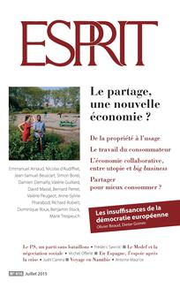
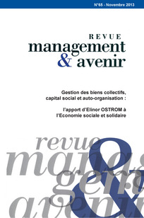
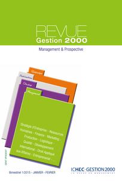
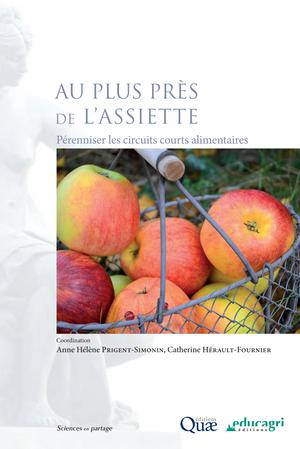
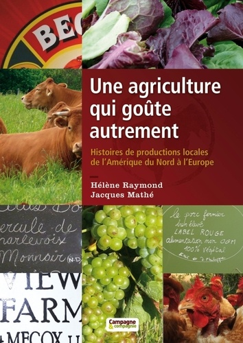
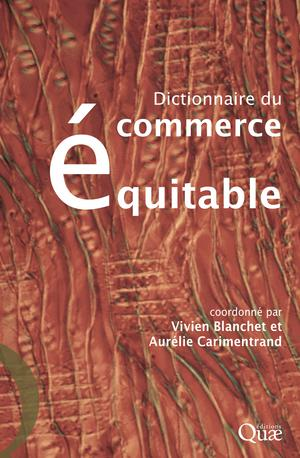

Retrouvez ici une sélection de livres, en lien avec L'économie sociale et solidaire.

Le partage, une nouvelle économie ?
Les analystes sont prompts à qualifier l’économie collaborative de transformation radicale du système capitaliste. Mais qu’en pensent ceux qui créent des entreprises au sein de ce secteur ? Quelles sont les priorités, les motivations des entrepreneurs, leur manière d’envisager l’organisation du travail comme l’impact de leurs initiatives sur les modes de consommation ?
Emprunter

L’ambition démocratique à l’âge de l’anthropocène
De même que la révolution industrielle a mis la société démocratique à l’épreuve du marché libéral, la révolution climatique l’engage à réfléchir sur son environnement et à protéger la nature. Face au changement climatique, il faut donc réaffirmer l’ambition démocratique des sociétés modernes.
Emprunter

Économie des res derelictae et gestion solidaire des déchets
La gouvernance des biens communs théorisée par Elinor Ostrom propose une approche institutionnelle de l’étude de l’auto-organisation et de l’auto-gouvernance dans les situations de ressources communes. Dans la lignée de ses travaux et de ceux qui concernent l’approche institutionnaliste de l’économie des déchets, nous proposons dans le cadre de cet article de comprendre les fondements et les modalités du modèle économique des appropriateurs solidaires, en tant que gestionnaires des res derelictae dans un objectif solidaire de consolidation non seulement d’une activité d’insertion par l’activité économique portée par certaines écocycleries solidaires, mais aussi d’intégration des publics moins favorisés par l’accès à des biens communs d’occasion revalorisés. A leur étude, nous aboutissons à deux enseignements. D’une part, nous disposons d’une innovation socioéconomique territorialisée dans la gestion des déchets. D’autre part, cette innovation participe à la dynamique du dialogue social territorial élargi à la source d’un nouveau modèle de développement local, socialement soutenable, respectueux de l’environnement, mais de plus en plus contraint dans sa dimension économique.
Emprunter

Les coopératives d’activité et d’emploi
L’objet de cet article est de présenter les Coopératives d’Activités et d’Emploi (CAE), réponse apportée par l’économie sociale et solidaire à la problématique de l’accompagnement entrepreneurial. Elles constituent un mode d’accompagnement original permettant de sécuriser un processus entrepreneurial collectif dans un cadre salarial. Un travail empirique, réalisé auprès de plusieurs CAE, présente le public de ces CAE, ce qu’il recherche, ce qu’il en retire ainsi que le rôle éducatif joué par les CAE pour les sensibiliser à l’économie sociale et solidaire.
Emprunter
Économie sociale : la solidarité au défi de l’efficacité
Pour en avoir été un praticien pendant plus de quarante ans, Thierry Jeantet est un fin connaisseur de l’économie sociale et solidaire (ESS). Dans cet ouvrage, il décrit avec pédagogie les différents types de structures (coopératives, mutuelles, associations, fondations) qui forment ce secteur, ce qui les rassemble (la gouvernance démocratique, les principes de solidarité, notamment), ce qui les différencie, qui sont leurs pères fondateurs (Charles Fourier, Frédéric Le Play, Louis Blanc, Charles Gide…), comment elles sont nées, se sont développées et ont évolué depuis le XIXe siècle.
Emprunter
Économie sociale et solidaire : ses écosystèmes
Ce numéro d’Interventions économiques soulève la question d’un nouvel écosystème pour les entreprises relevant de l’économie sociale et solidaire.
Emprunter

Des circuits courts à la reterritorialisation de l’agriculture et de l’alimentation
A partir des circuits courts, l’article interroge comment les innovations sociales jouent le rôle de catalyseur d’un ensemble de transformations socioéconomiques, auxquelles elles donnent un support dont les acteurs peuvent se saisir pour tenter de changer les logiques de régulation du développement territorial. Le processus de diffusion d’innovations sociales comme les circuits courts pourrait leur faire perdre leur caractère radicalement alternatif. Néanmoins, ceux-ci contribuent à une modification du rapport aux territoires et des représentations que les acteurs se font des enjeux des politiques publiques locales.
Emprunter

Au plus près de l’assiette : pérenniser les circuits courts alimentaires
De plus en plus de consommateurs choisissent les circuits courts alimentaires. Cet ouvrage dresse un panorama des enjeux constitués autour de ces circuits courts. Issu du projet collectif LiProCo, il rassemble et croise les expertises de chercheurs et de spécialistes issus des sciences de gestion, de la sociologie, de la géographie et de l’économie.
Emprunter

Une agriculture qui goûte autrement : histoires des productions locales de l’Amérique du Nord à l’Europe
En Amérique du nord comme en Europe, des agriculteurs renouvellent leur métier en construisant des relations directes avec les consommateurs : partout, diversité et proximité riment avec modernité. Les histoires des paysans rencontrés pendant deux ans par les auteurs vous étonneront et vous feront rêver. Ces histoires sont classées en 4 thèmes : - productions locales, - productions collectives, - entreprises durables, - entreprises solidaires.
Emprunter

Dictionnaire du commerce équitable
Le commerce équitable est à la mode et a connu un développement fulgurant. Qu’est-il ? D’où vient-il ? Où va-t-il ? Composé d’une trentaine d’entrées thématiques problématisées, ce dictionnaire est le fruit d’un projet collaboratif conçu par des chercheurs spécialistes du commerce équitable et des échanges alternatifs réunis au sein de l’association Fairness.
Emprunter